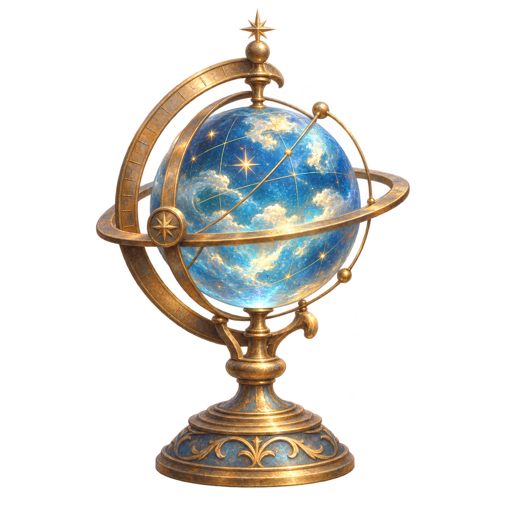

Worldwright / In preparation
A world taking shape.
A storytelling product for worlds with more than one way through.
Worldwright is being developed as an environment for authoring and presenting connected stories. A world holds the people, ideas, events and sources; a composition arranges encounters and passages; a journey is the route a reader actually takes.
Its guiding idea is that an author can shape a meaningful experience while leaving readers room to choose, question and return. This personal expedition is the first composition. The wider authoring product remains in development. This is a placeholder for the Worldwright microsite.
Follow a thread through the corpus →